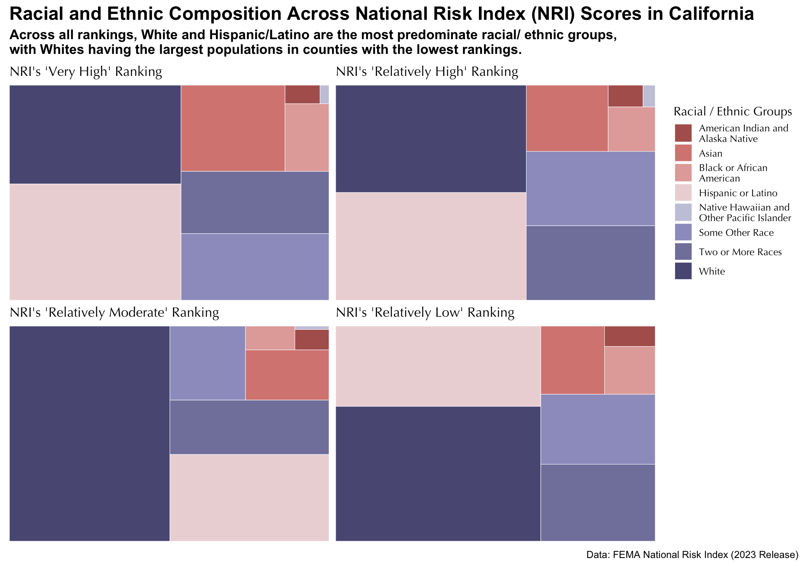

library(tidyverse)
library(patchwork)
library(dplyr)
library(treemapify)
library(paletteer)
library(patchwork)HW3: Visualizing FEMA NRI x ACS Data
Load Libraries and Data
#usethis::edit_r_environ()
#
#
# #....Step 1a: see all available ACS variables + descriptions.....
# acs_vars <- tidycensus::load_variables(year = 2023, dataset = "acs1")
#
# #..............Step 1b: import race & ethnicity data.............
# race_ethnicity <- tidycensus::get_acs(
# geography = "county",
# survey = "acs1",
# # NOTE: you may not end up using all these variables
# variables = c(
# "B01003_001",
# "B02001_002",
# "B02001_003",
# "B02001_004",
# "B02001_005",
# "B02001_006",
# "B02001_007",
# "B02001_008",
# "B03002_012",
# "B03002_002"
# ),
# state = "CA",
# year = 2023
# ) |>
# # join variable descriptions (so we know what's what!)
# dplyr::left_join(acs_vars, by = dplyr::join_by(variable == name))
#
# #.................Step 2: write ACS data to file.................
# readr::write_csv(race_ethnicity,
# here::here("data", "ACS-1yr-2023-county-race-ethnicity.csv"))
#..................Step 3: read in your CSV files.................
race_ethnicity <- readr::read_csv(here::here("data", "ACS-1yr-2023-county-race-ethnicity.csv")) %>%
janitor::clean_names() %>%
rename(county_name = name)
nri_ca <- read_csv(here::here("data", "National_Risk_Index_Counties.csv")) %>%
janitor::clean_names() %>%
filter(state_name_abbreviation == "CA") # Filter for just CA Data Cleaning and Wrangling
Clean and wrangle the NIR data set
# Select to only necessary columns
nri_ca_subset <- nri_ca %>%
select(county_name, population_2020, state_name_abbreviation, area_sq_mi, national_risk_index_value_composite, national_risk_index_score_composite, national_risk_index_rating_composite)
# NRI Ratings = factor
order <- c("Insufficient Data", "Very Low", "Relatively Low", "Relatively Moderate", "Relatively High", "Very High")
nri_ca_subset$national_risk_index_rating_composite <- factor(nri_ca_subset$national_risk_index_rating_composite,
levels = order)Clean and wrangle race_ethnicity
#
race_ethnicity_cleaned <- race_ethnicity %>%
separate_wider_delim(cols = county_name, # Make county col just county names
delim = " County, ",
names = c("county_name", "state")) %>%
select(county_name, estimate, label) %>% # Select necessarly cols
pivot_wider(names_from = label, # Making data tidy
values_from = estimate) %>%
select(-c(`Estimate!!Total:!!Not Hispanic or Latino:`)) %>%
rename(total = `Estimate!!Total`)
# Clean column names
colnames(race_ethnicity_cleaned) <- gsub("Estimate!!Total:!!|:| alone", "", colnames(race_ethnicity_cleaned))Join the NIR and race/ethnicity data sets
# Join NRI data to race/ethnic data
nri_race_joined_df <- left_join(race_ethnicity_cleaned, nri_ca_subset, by = 'county_name')Create the plot
# Making function to plot
make_treemap <- function(risk_level) {
if (!risk_level == "Relatively High") { # Plots with NO legend
p <- nri_race_joined_df %>%
filter(national_risk_index_rating_composite == risk_level) %>% # Filter for specific ranking
pivot_longer( # Pivot the data
cols = `White`:`Hispanic or Latino`,
names_to = "races",
values_to = "race_population"
) %>%
select(races, race_population) %>% # Select necessary columns
group_by(races) %>% # Find total population of each race in the risk level
summarise(tot_pop = sum(race_population)) %>%
# Create plot
ggplot(aes(area = tot_pop, fill = races)) +
geom_treemap(color = "white") +
scale_fill_paletteer_d("MetBrewer::Cassatt1") +
theme_minimal() +
labs(
title = paste0("NRI's '", risk_level, "' Ranking"),
fill = "Racial / Ethnic Groups"
) +
theme(legend.position = "none", # remove legend
plot.title = element_text(size = 12),
text = element_text(family="Optima"),
plot.margin = margin(t = 3, r = 3, b = 3, l = 3))
}
else { # The plot that contains the legend
p <- nri_race_joined_df %>%
filter(national_risk_index_rating_composite == risk_level) %>% # Filter for specific ranking
pivot_longer( # Pivot the data
cols = `White`:`Hispanic or Latino`,
names_to = "races",
values_to = "race_population"
) %>%
select(races, race_population) %>% # Select necessary columns
group_by(races) %>% # Find total population of each race in the risk level
summarise(tot_pop = sum(race_population)) %>%
mutate(races = str_wrap(races, width = 23)) %>% # Wrap legend words
# Create plot
ggplot(aes(area = tot_pop, fill = races)) +
geom_treemap(color = "white") +
scale_fill_paletteer_d("MetBrewer::Cassatt1") +
theme_minimal() +
labs(
title = paste0("NRI's '", risk_level, "' Ranking"),
fill = "Racial / Ethnic Groups"
) +
theme(plot.title = element_text(size = 12),
text = element_text(family="Optima"),
plot.margin = margin(t = 3, r = 3, b = 3, l = 3))
}
}
# Using the function with the different risk levels
very_high_race <-make_treemap(risk_level = "Very High")
rel_high_race <- make_treemap(risk_level = "Relatively High")
rel_mod_race <- make_treemap(risk_level = "Relatively Moderate")
rel_low_race <- make_treemap(risk_level = "Relatively Low")
# Using `patchwork` to combine plots
CA_NRI_racial_prop_plot <- (very_high_race | rel_high_race) / (rel_mod_race | rel_low_race) +
plot_annotation(title = "Racial and Ethnic Composition Across National Risk Index (NRI) Scores in California",
subtitle = "Across all rankings, White and Hispanic/Latino are the most predominate racial/ ethnic groups,\nwith Whites having the largest populations in counties with the lowest rankings.",
caption = "Data: FEMA National Risk Index (2023 Release)",
theme = theme(plot.title = element_text(size = 16.5, face = "bold"),
plot.subtitle = element_text(size = 12, face = "bold")))
CA_NRI_racial_prop_plot
# Save plot
ggsave(here::here("figs", "CA_NRI_racial_prop_plot.png"), height = 7, width = 10)Questions
What are your variables of interest and what kinds of data (e.g. numeric, categorical, ordered, etc.) are they (a bullet point list is fine)?
| Variables | Data Type | Details |
|---|---|---|
| NRI Rankings | Categorical (ordinal) | ‘Very High’, ‘Relatively High’, ‘Relatively Moderate’, ‘Relatively Low’, ‘Very Low’, ‘Insufficient Data’ - the CA counties did not have ‘Very Low’ or ‘Insufficient Data’ rankings |
| Racial / ethnic groups population | Numeric | Total populations of each group in each ranking |
How did you decide which type of graphic form was best suited for answering the question? What alternative graphic forms could you have used instead? Why did you settle on this particular graphic form?
- I was interested in seeing how the proportions of groups changed with different rankings. In my opinion, treemaps are the best part-to-whole plot form because it is easier to understand the difference in proportions with the box format. I also experimented with proportional bar charts. However, with proportional bar charts, it can become difficult to understand how proportions change between bars.
Summarize your main finding in no more than two sentences.
- The racial and ethnic composition for all rankings in California is: (1) White and Hispanic/Latino, (2) 2+ Races and Other Race, (3) Asian, (4) Black or African American, (5) American Indian and Alaska Native, and (6) Native Hawaiian and Other Pacific Islander (whose concentration consistantly increased with higher NRI scores). Hispanic/Latino had the largest proportions in the two highest NRI rankings, while Whites lead in the two lowest NRI rankings
What modifications did you make to this visualization to make it more easily readable?
- To attempt to make the visual more readable, I adjusted margins, changed fonts, font-size, and font-faces, messed with colors, and move the legend around.
Is there anything you wanted to implement, but didn’t know how? If so, please describe.
- I am really happy with the final visual composition. I tried moving the legend to encompass the full bottom of the patchwork-constructed plot in a landscape orientation. However, it was typically being cut off on the left or right and was super tedious to mess with.